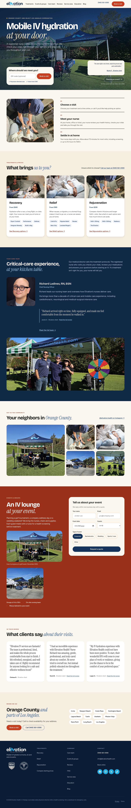
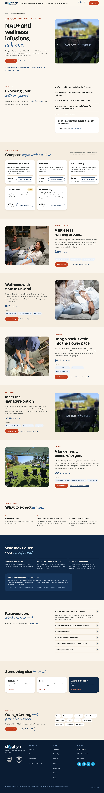

Eight full-page screenshots, captured locally before the final commit. Open any image to inspect the entire page. No server is needed to view these files.
Changes, test results and client review items

